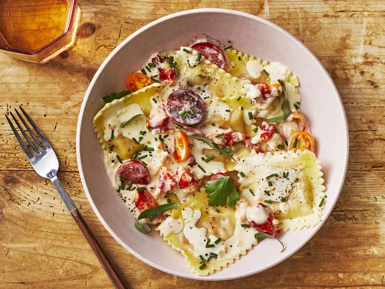

Lobster Raviolis

Description
The lobster is simply enriched with mascarpone, aromatics, and fresh herbs, so the sweet lobster meat shines through in the finished ravioli. If you want to jazz it up, add some cayenne pepper, Parmesan, or saffron.
Ingredients
- 1 ½ cups all-purpose flour, plus more for dusting
- 2 large eggs
- 1 teaspoon kosher salt, divided
- ¾ cup mascarpone cheese
- 6 tablespoons cold unsalted butter, divided
- 3 cloves garlic, finely chopped
- 1 large shallot, finely chopped
- 1 tablespoon finely chopped fresh chives
- 1 tablespoon finely chopped fresh basil
- 1 tablespoon finely chopped fresh tarragon leaves
- 1 tablespoon fresh lemon juice
- 2 teaspoons grated lemon zest
- ¼ teaspoon ground black pepper
- 8 ounces cooked lobster meat, cut into bite-size pieces
- ¾ cup bottled clam juice
- ½ cup dry white wine
- ¾ cup heavy whipping cream
- 1 cup cherry tomatoes, halved
- fresh herbs, for garnish